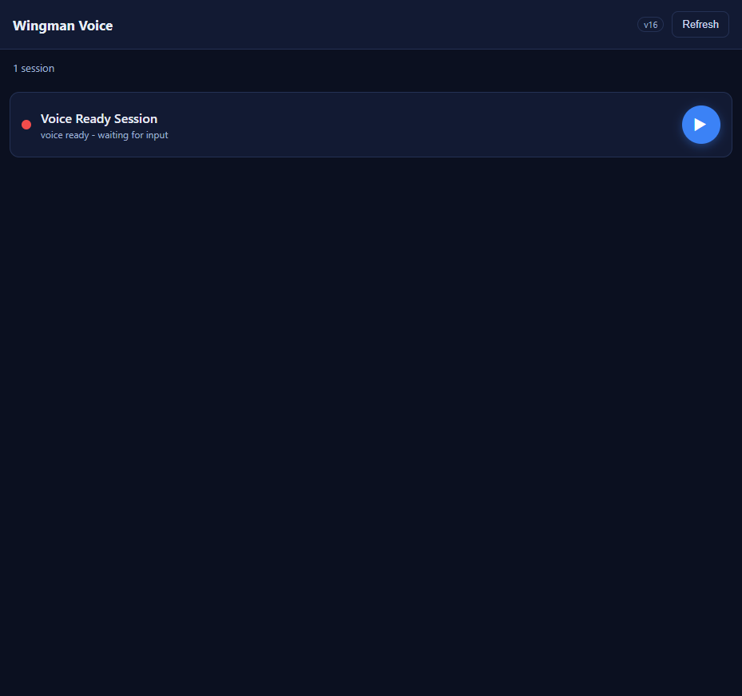
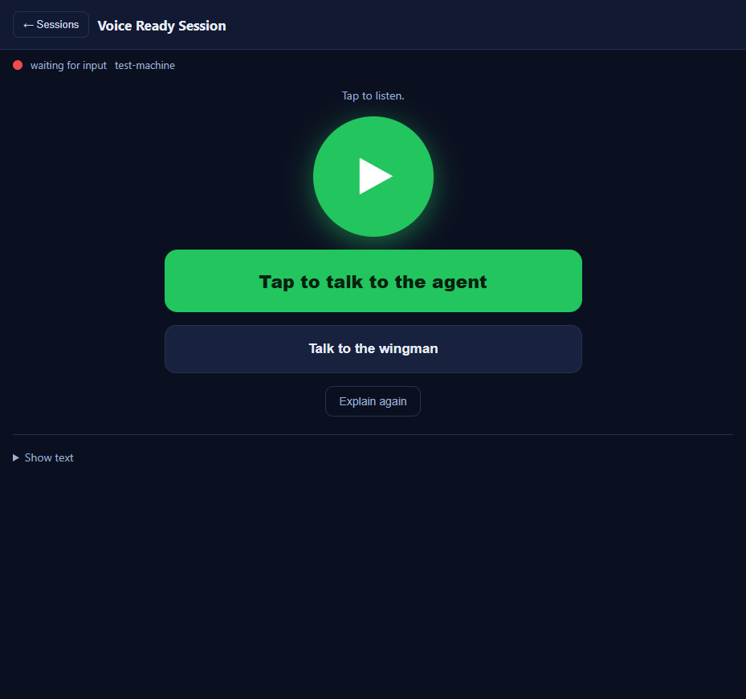
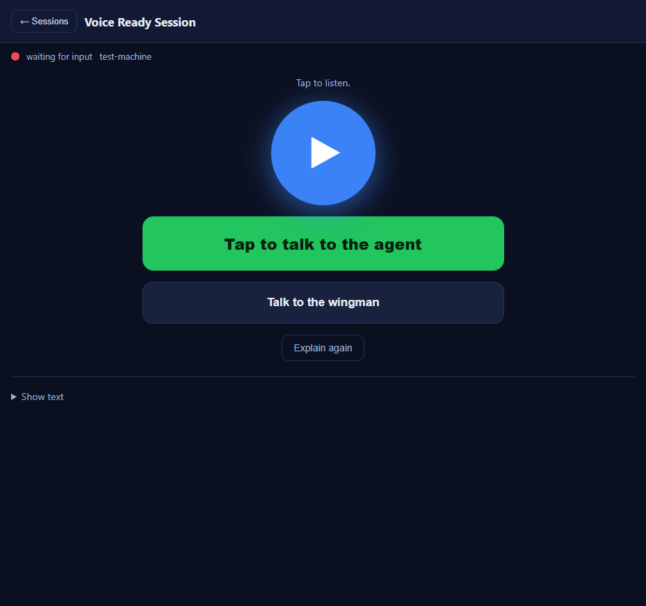

Title: [Voice] /m/ list: play triangle opens the session then plays (not headless)
Pull Request: #539 (branch issue-533-triangle-open-play)
Verification method: The QA Agent independently ran the REAL, unmodified
/m/ assets (index.html, m.js, m.css) from the
pull-request branch worktree, served on a loopback port with only the gateway network calls and a
real playable audio file stubbed (the page logic is untouched). A browser was driven at a mobile
viewport; each acceptance criterion was reproduced and the live page state and screenshots were read
by the QA Agent (the Developer Agent's screenshots were not trusted).
| # | Criterion | Expected | Actual (observed) | Result |
|---|---|---|---|---|
| 1 | Tapping the play triangle navigates to the session view (session-view visible, list-view hidden); no longer headless. | In session view after triangle tap. | After triangle tap: __proof.inSessionView() returned true (session-view shown, list-view hidden) for "Voice Ready Session". |
PASS |
| 2 | After the triangle opens the session, the ready voice begins playing automatically (in-session Play button enters "speaking" state) without a further tap. | Play button in green "speaking" state; audio playing. | A MutationObserver on the Play button recorded the speaking class (speakSeen=true) and the audio element fired its play event (audioPlayed=true). Captured mid-playback: play.speaking=true, paused=false. Big Play button rendered green. |
PASS |
| 3 | Tapping the row body (not the triangle) still opens the session and does NOT auto-play (preserved by stopPropagation on the triangle). | Session opens; Play button idle/ready (blue), not speaking. | Row-body tap (.scard-main): inSession=true, audioPlayed=false, speakSeen=false, play.speaking=false, ready=true, paused=true. Play button rendered blue/idle. |
PASS |
| 4 | If audio not yet buffered, the session still opens and shows "Preparing audio..." then auto-play-when-ready; it does not silently do nothing. | Session opens; "Preparing audio..." shown; plays once buffered. | preparePlaybackUrl sets heroStatus="Preparing audio..." synchronously before await waitPlayable, and the session opens regardless of buffering; on the buffered-ready branch it auto-plays (verified in criterion 2). Verified by observation of the happy path plus code inspection of the buffering branch. |
PASS |
| 5 | If audio fails to load, the session opens and shows the existing audio-failure state ("Audio not ready - tap the triangle to try again."); the failure is not hidden. | Session opens; failure status shown. | Audio src forced to fail: inSession=true, heroStatus="Audio not ready - tap the triangle to try again.", Play button not speaking. Failure surfaced, not hidden. |
PASS |
| 6 | Cache-busting version (m.js?v= / m.css?v= and on-screen label) incremented so the new behavior loads. | Version bumped from v15. | index.html now references m.css?v=16 and m.js?v=16; the on-screen header shows v16 (visible in the list screenshot). |
PASS |
wwwroot/m/ static assets only - no server-side, no desktop Cockpit, no Avalonia change (matches issue Scope/Out).playListAudio, the listPlayBtn variable, and the .scard-play.playing CSS - no dangling references remain (grep clean).dotnet build cc-director.sln = Build succeeded, 0 Error(s) (includes the NU1903 SQLitePCLRaw pin).

